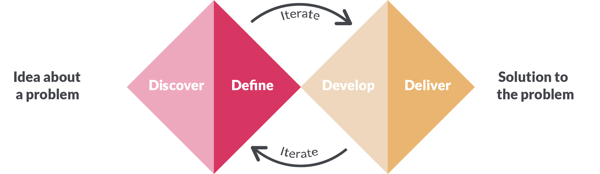
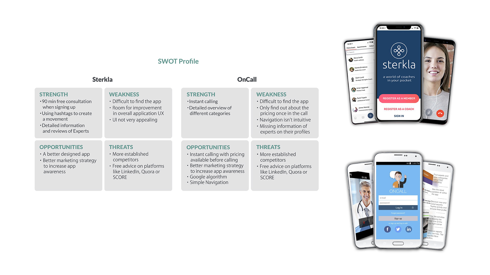
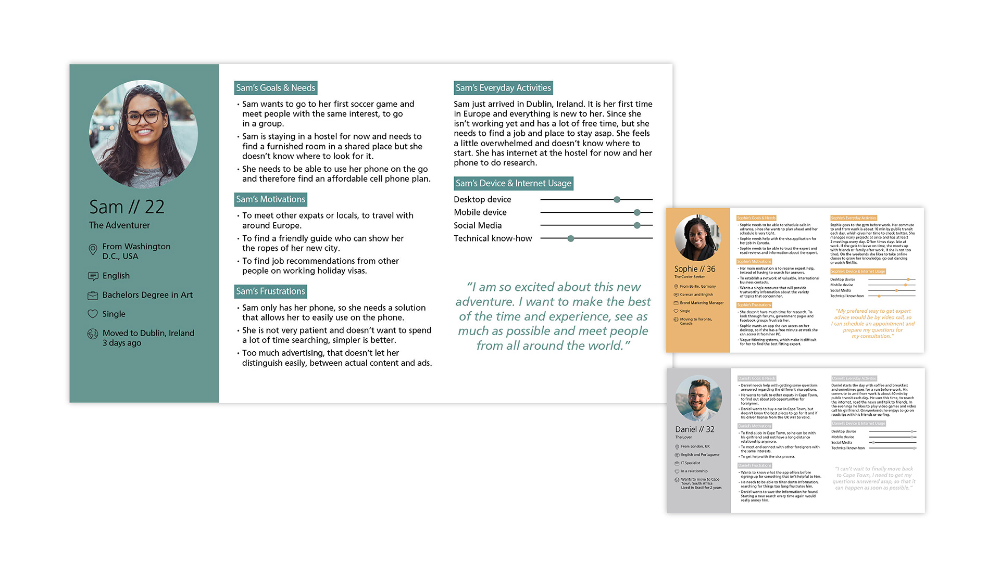
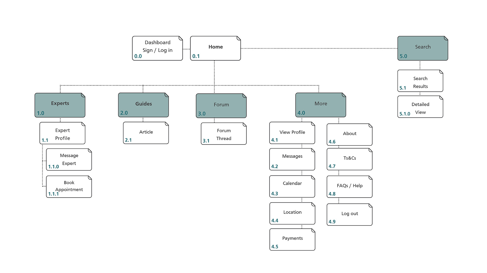
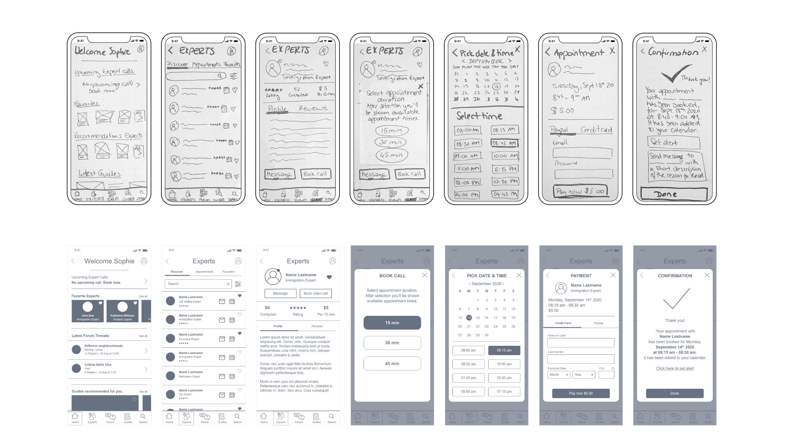
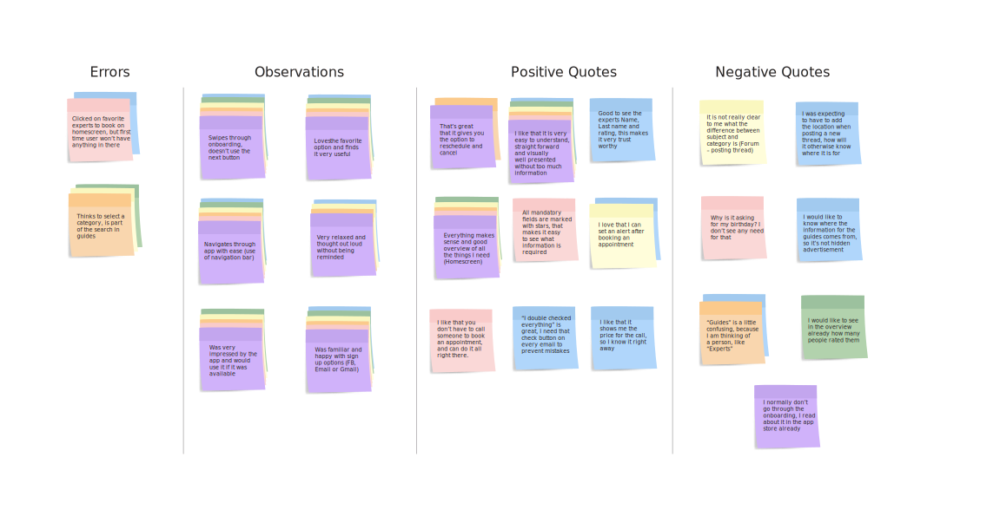
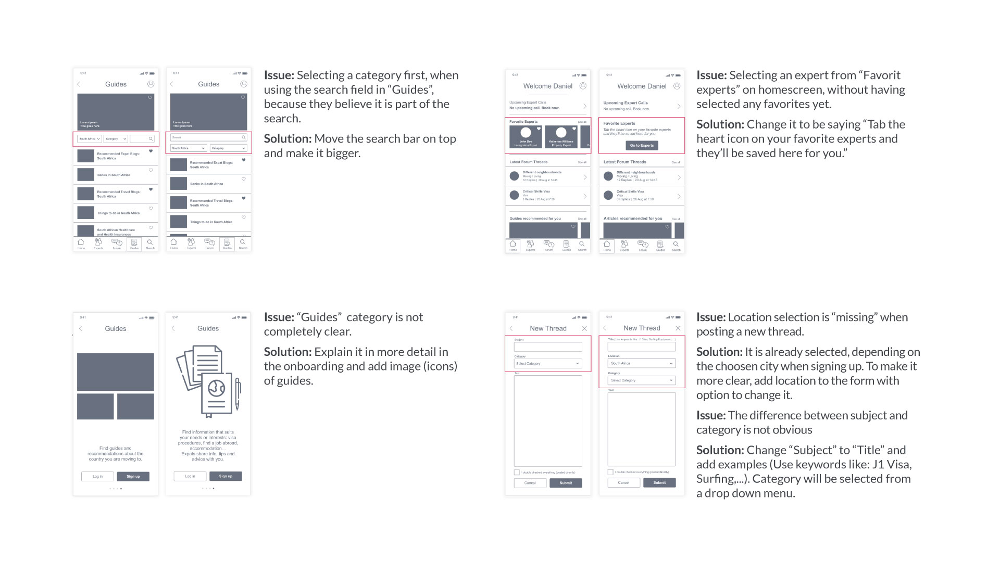
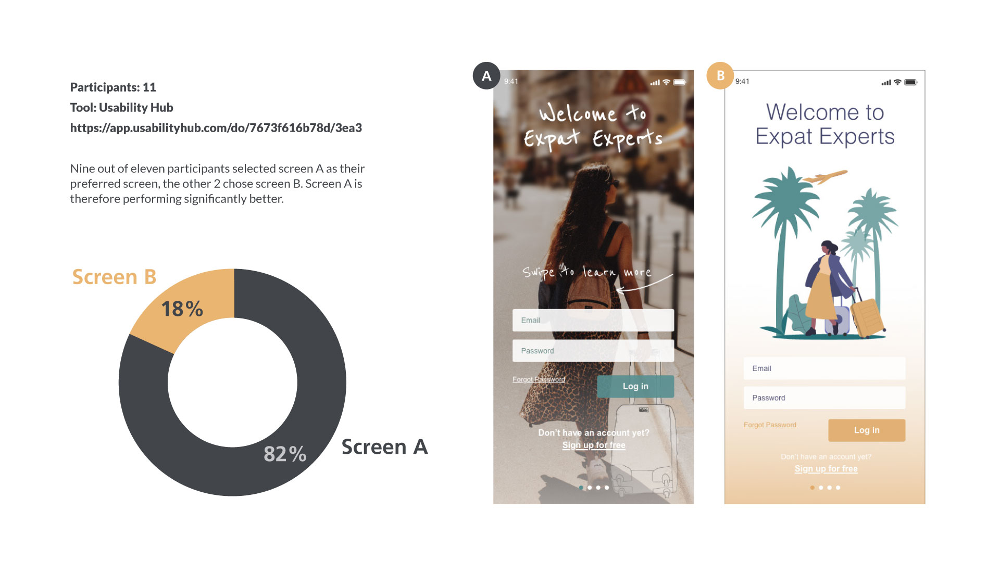
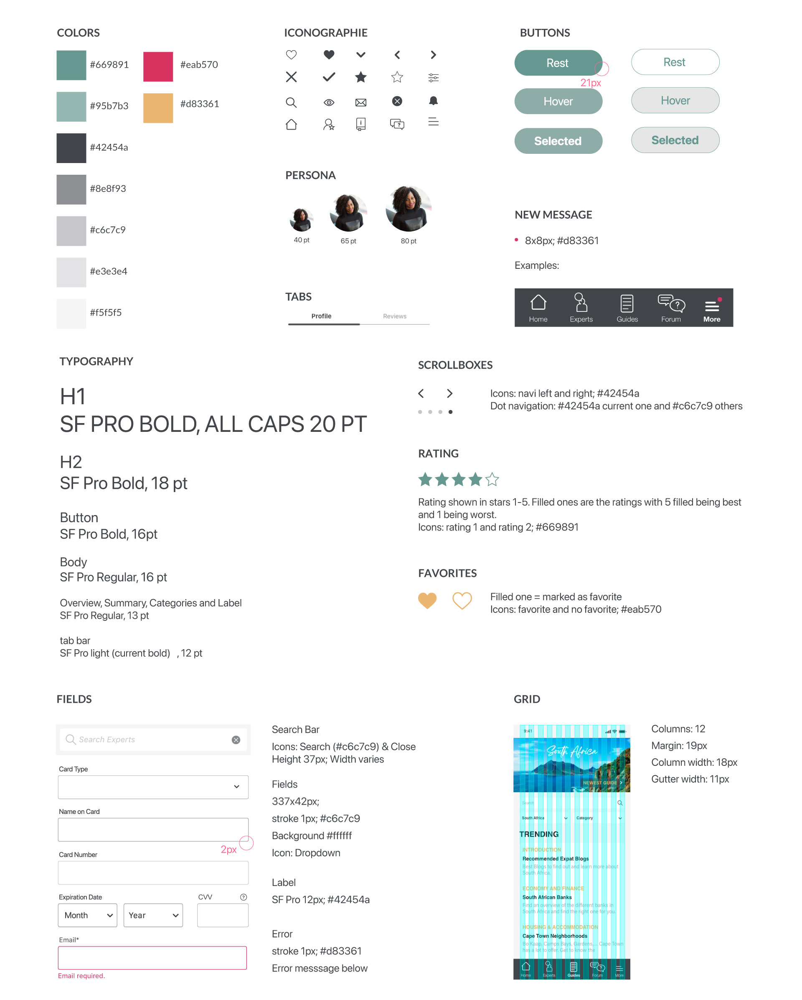

<!DOCTYPE html>
<html lang="en" dir="ltr">

<head>
  <meta charset="utf-8">
  <!--To make sure it scales corretly also on mobile-->
  <meta name="viewport" content="width=device-width, initial-scale=1">
  <link href="img/favicon.ico" rel="shortcut icon">
  <!--Remove all styles-->
  <link rel="stylesheet" type="text/css" href="https://cdnjs.cloudflare.com/ajax/libs/normalize/8.0.0/normalize.min.css">
  <!-- Global site tag (gtag.js) - Google Analytics -->
<script async src="https://www.googletagmanager.com/gtag/js?id=G-F8C4EL31S9"></script>
<script>
  window.dataLayer = window.dataLayer || [];
  function gtag(){dataLayer.push(arguments);}
  gtag('js', new Date());

  gtag('config', 'G-F8C4EL31S9');
</script>
  <!--Fonts selection-->
  <link rel="preconnect" href="https://fonts.gstatic.com">
  <link href="https://fonts.googleapis.com/css2?family=Lato:ital,wght@0,100;0,300;0,400;0,700;0,900;1,400;1,700;1,900&display=swap" rel="stylesheet">
  <link rel="stylesheet" href="https://use.fontawesome.com/releases/v5.15.2/css/all.css" integrity="sha384-vSIIfh2YWi9wW0r9iZe7RJPrKwp6bG+s9QZMoITbCckVJqGCCRhc+ccxNcdpHuYu" crossorigin="anonymous">
  <link rel="preconnect" href="https://fonts.gstatic.com">
  <link href="https://fonts.googleapis.com/css2?family=Lustria&display=swap" rel="stylesheet">  <link rel="stylesheet" type="text/css" href="css/style.css">
  <title>About Pia Lettenbauer UX design</title>
</head>

<body id="home-page">
  <header>
      <div class="container">
      <div class="navtoggle" id="myNavtoggle">
        <a href="index.html" class="logo">Pia Lettenbauer</a>
        <nav>
        <ul>
          <li><a href="index.html">Work</a></li>
          <li><a href="about.html">About</a></li>
          <li><a href="#contact">Contact</a></li>
          <li><a href="javascript:void(0);" class="icon" onclick="myFunction()"><i class="fas fa-bars"></i></a></li>
        </ul>
      </nav>
    </div>
  </div>
  </header>
  <main>

    <!--Project-->
    <div id="headerimage">
      <picture>
        <source srcset="img/experts/expatsmall.png" media="(max-width:767px)">
        
      </picture>
    </div>
    <!--About-->
      <div class="small-section">
        <div class="container">
          <h2>About Expat Experts</h2>
          <div class="row">
            <div class="column col-lg-6">
              <p>As part of the CareerFoundry UX Design course, I chose to create a specialist advisory app: Expat Experts, a responsive web app that follows the mobile-first approach.</p>
              <p>The process of moving to another country can be quite difficult, because the questions can be very complex and the cases unique for each individual, which can make it very time consuming and sometimes impossible to find helpful
                answers.</p>
              <p>So Expat Experts was born, a responsive web app that helps with the process of moving to a new country, settling in and living in a foreign country. Users can book appointments with experts in various fields, such as immigration,
                career, relocation, taxes, etc. These expert advices are priced affordably and in different languages. Besides that, users can ask questions and share experiences with other users in the forum, as well as finding useful guides with
                great advice
                for different countries all over the world.</p>
            </div>
            <div class="column col-lg-6">
              <h4>Role</h4>
              <p>UX/UI Designer</p>
              <h4>Period</h4>
              <p>June 2020 - Jan 2021</p>
              <h4>Tools</h4>
              <p>Adobe XD, Illustrator, Photoshop,
                Usability Hub, Google Forms</p>
            </div>
          </div>

          <div class="row">
            <div class="column col-lg-6">
              <h3>Design Process</h3>
              <p>The methodology used for the development of the application was the Double Diamond Strategy. It focuses on breaking up the design process into four stages: <br>
                <a href="#discover">Discover</a>, <a href="#define">Define</a>, <a
                  href="#design">Design</a> &<a href="#deliver">Deliver</a>.</p>
            </div>
            <div class="column col-lg-6">
                
            </div>
          </div>
        </div>
      </div>
    </div>

    <!--Discover-->
    <div class="divider" id="discover">
      <h1>Discover</h1>
    </div>
    <div class="small-section">
      <div class="container">
        <h3>Competitor Analysis</h3>
        <p>In order for me to recognize and understand competitors and the market, I conducted a competitor analysis for “Sterkla” and “Oncall”. During my analysis, I gained valuable insights regarding user needs, feelings and frustrations, which helped me to define better what was useful to design.</p>
        <picture>
          <source srcset="img/experts/competitor_small.jpg" media="(max-width:767px)">
          
        </picture>
      </div>
    </div>

    <!--Define-->


    <div class="divider" id="define">
      <h1>Define</h1>
    </div>
    <div class="small-section">
      <div class="container">
        <h3>User Persona</h3>
        <p>Based on my research and data findings I developed three personas, to better understand and empathize with the users needs, motivations and frustrations.</p>
        <picture>
          <source srcset="img/experts/persona_small.jpg" media="(max-width:767px)">
          
        </picture>
        <h3>Informational Architecture</h3>
        <p>In the next step I developed a first attempt of the sitemap, based on all insights collected from my research. However, to validate the sitemap, I conducted a card sorting exercise with 9 participants. The results showed me that the
          participants had a general understanding of the pages and only minimal changes were made.</p>
        <picture>
          <source srcset="img/experts/sitemap_small.jpg" media="(max-width:767px)">
          
        </picture>
      </div>
    </div>

    <!--Design-->
    <div class="divider" id="design">
      <h1>Design</h1>
    </div>
    <div class="small-section">
      <div class="container">
        <h3>Low, Mid & High-Fidelity Prototypes</h3>
        <p>I developed a Minimum Viable Product with paper prototyping, which meant I could iterate quickly and test the UX of a product without having spent too much time on development costs. This journey between lo-fidelity to hi-fidelity gave
          me time to identify pain points along the user journey before moving to the next stage.</p>
        <picture>
          <source srcset="img/experts/prototypes_small.jpg" media="(max-width:767px)">
          
        </picture>
        <h3>Usability Testing</h3>
        <p>Next, I started with the first round of usability testing. The goal was to evaluate the learnability of the application’s functionality among the first time users on the mobile version. As well as to observe and measure how the users
          interact with the sign up and onboarding, general navigation through the app and how they will interact with the main features:</p>
        <p>a) Book a call with an expert<br>
          b) Post a new thread in the forum<br>
          d) Find a specific guide</p>
        <p>I conducted two moderated in-person and four moderated remote usabilty tests in total. All sessions were recorded and lasted between 30-40 min. <br>
          In order, to analyze all the finding I gathered from users during the usability tests, I first created an Affinity Map. To classify the found usability problems and to give recommendations for future iterations I then sorted them with
          the help of the Rainbow Spreadsheet.</p>
        
        <h3>Iterations</h3>
        <picture>
          <source srcset="img/experts/iterations_small.jpg" media="(max-width:767px)">
          
        </picture>
        <h3>A&B Testing</h3>
        <picture>
          <source srcset="img/experts/ab_small.jpg" media="(max-width:767px)">
          
        </picture>
      </div>
    </div>

    <!--Deliver-->
    <div class="divider" id="deliver">
      <h1>Deliver</h1>
    </div>
    <div class="small-section">
      <div class="container">
        <h3>Style Guide</h3>
        <p>Now it was time to put together the style guide, to be used as reference for all devices.</p>
        <picture>
          <source srcset="img/experts/styleguide_small.jpg" media="(max-width:767px)">
          
        </picture>
      </div>
    </div>
    <div class="section">
      <div class="container" id="prototype">
        <a href="https://xd.adobe.com/view/bd0ebdb1-6644-4951-a3f8-557d0981df60-e85d/" class="button prototype" target="_blank">View prototype</a>
      </div>
    </div>
  </main>

  <!--Footer-->
  <footer id="contact">
    <div class="container">
      <div class="social">
        <span>© Pia Lettenbauer 2021</span>
        <a href="mailto:pia.lettenbauer@gmail.com"><i class="far fa-envelope"></i></a>
        <a href="https://www.linkedin.com/in/pialettenbauer/" target="_blank"><i class="fab fa-linkedin-in"></i></a>
      </div>
    </div>
  </footer>
  <script
  src="https://code.jquery.com/jquery-3.6.0.min.js"
  integrity="sha256-/xUj+3OJU5yExlq6GSYGSHk7tPXikynS7ogEvDej/m4="
  crossorigin="anonymous"></script>
  <script src="js/scripts.js"></script>
</body>

</html>
